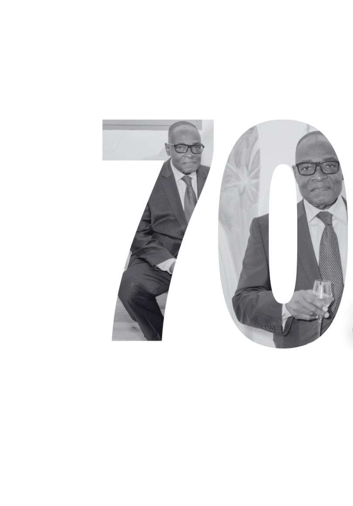

01 / 04
30 Mai 2026
63 rue Saint André, 93000 Bobigny
À l’occasion de ses 70 ans, nous avons la joie de célébrer Félix MFOU’OU comme il se doit, entouré de celles et ceux qui comptent.
Cet événement est bien plus qu’un anniversaire : c’est un moment de partage, de souvenirs et de reconnaissance pour un parcours riche, marqué par la sagesse, la générosité et les valeurs qu’il transmet depuis toujours.
Nous vous invitons à vous joindre à nous pour honorer cette belle étape de vie dans une ambiance chaleureuse et conviviale
Retrouvez ici le programme et les informations essentielles.
Au plaisir de partager ce moment avec vous !
02 / 04
Dress code : Chic en bleu / blanc
17h00
🔷Cocktail
Un moment pour se retrouver autour d'un verre, bercé par des sonorités traditionnelles.
20h00
🔷Dîner & animations
Place au partage autour du repas, ponctué de surprises et de moments chaleureux.
22h00
🔷Soirée Dansante
La soirée se poursuit sur la piste de danse, tous réunis autour du patriarche dans une ambiance chaleureuse.
03h00
🔷Clôture de la soirée
03 / 04
Ligne 7 — Fort d'Aubervilliers + Bus 236 — Division Leclerc
Ligne 5 — Hoche + Bus 151 — Chemin des Vignes
Pas de parking sur place — stationnement possible à proximité
04 / 04
Pour celles et ceux qui le désirent, une cagnotte a été mise en place afin de contribuer à un cadeau commun, pensé pour marquer ce moment unique.
Si vous préférez lui offrir un cadeau, voici quelques indications :
Votre présence à ses côtés reste, avant tout, le plus beau des cadeaux.
Chaque attention contribuera à rendre cette journée encore plus mémorable.